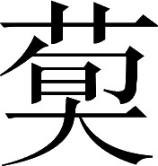

魏书 · 卷十
荀彧荀攸贾诩传第十
荀彧，字文若，颍川郡颍阴县人。他的祖父荀淑，字季和，曾任朗陵县令；在汉顺帝、桓帝期间，很有名气。荀淑有八个儿子，号称“八龙”。荀彧的父亲荀绲，曾任济南国相；叔父荀爽，曾任司空。
注释
注释 〖1〗
颍阴：县名。县治在今河南许昌市。
注释 〖2〗
朗陵：县名。县治在今河南确山县西南。
注释 〖3〗
顺、桓：即东汉顺帝刘保（公元 114—144）、桓帝刘志（公元 132—167）。
裴注
裴注 ﹝一﹞
《续汉书》曰：“淑，有高才，王畅、李膺皆以为师。为朗陵侯相，号称‘神君’。”
张璠《汉纪》曰：“淑，博学有高行，与李固、李膺同志友善；拔李昭于小吏，友黄叔度于幼童。以贤良方正，征。对策讥切梁氏，出补朗陵侯相。卒官。八子：俭、绲、靖、焘、（诜）〔汪〕、爽、肃、旉。音敷。爽字慈明。幼好学，年十二，通《春秋》、《论语》。耽思经典，不应征命，积十数年。董卓秉政，复征爽；爽欲遁去，吏持之急。诏下郡，即拜平原相；行至苑陵，又追拜光禄勋；视事三日，策拜司空。爽起自布衣，九十五日而至三公。淑旧居西豪里，县令苑康曰‘昔高阳氏有才子八人’，署其里为‘高阳里’。靖字叔慈。亦有至德，名几亚爽，隐居终身。”
皇甫谧《逸士传》：“或问许子将：‘靖与爽，孰贤？’子将曰：‘二人皆玉也；慈明外朗，叔慈内润。’”
荀彧年少时，南阳人何颙特别看重他，说：“这是个可以辅佐帝王的人才！”献帝永汉元年（公元189），荀彧被举荐为孝廉。担任守宫令。
裴注
裴注 ﹝二﹞
《典略》曰：“中常侍唐衡，欲以女妻汝南傅公明；公明不娶，转以与彧。父绲慕衡势，为彧娶之。彧为论者所讥。”
臣松之按：《汉纪》云“唐衡以桓帝延熹七年死”，计彧于时年始二岁；则彧婚之日，衡之没久矣。慕势之言为不然也。
臣松之又以为：绲，“八龙”之一，必非苟得者也；将有逼而然，何云慕势哉？昔郑忽以违齐致讥，隽生以拒霍见美；致讥在于失援，见美嘉其虑远；并无交至之害，故得各全其志耳。至于阉竖用事，四海屏气；左悺、唐衡，杀生在口。故于时谚云“左回天，唐独坐”，言威权莫二也。顺之则六亲以安，忤违则大祸立至；斯诚以存易亡，蒙耻期全之日。昔蒋诩姻于王氏，无损清高之操；绲之此婚，庸何伤乎？
董卓之乱时，他请求出任地方官，被任命为亢父县令。于是弃官回乡，对乡亲父老们说：“我们颍川，是四面受敌的争战之地！天下一有变故，常常成为兵家争夺的军事要冲；应当赶紧离开这里，不要久留！”乡里人有很多怀恋故土，犹豫不决。
会冀州牧同郡韩馥，遣骑迎之，莫有随者，彧独将宗族，至冀州。而袁绍已夺馥位，待彧以上宾之礼；彧弟谌及同郡辛评、郭图，皆为绍所任。
碰上同郡人冀州牧韩馥，派遣骑兵来迎接，没有人跟随前往，只有荀彧带领宗族，迁到冀州。而这时袁绍夺了韩馥的官位，用对上宾的礼仪接待荀彧；荀彧的弟弟荀谌和同郡人辛评、郭图，都被袁绍任用。
彧度绍，终不能成大事。时太祖为奋武将军，在东郡。初平二年，彧去绍从太祖。太祖大悦曰：“吾之子房也〖1〗！”以为司马，时年二十九。
荀彧估计袁绍，最终成不了大事。当时太祖曹操任奋武将军，驻在东郡。初平二年（公元 191），荀彧离开袁绍去随从太祖。太祖很高兴，说“你是我的张良啊！”委任他为司马，这时荀彧二十九岁。
注释
注释 〖1〗
子房：即张良（？—前 186）。字子房，相传为城父（今河南郏县东）人。先世是韩国的相。秦灭韩，他结交刺客，在博浪沙（今河南原阳县东南）刺杀秦始皇，未成功。秦末随刘邦起兵，成为刘邦手下最重要的谋臣。西汉建立，以功封留侯。常称病不掌握实权，所以得到善终。传见《史记》卷五十五、《汉书》卷四十。曹操得到荀彧大为喜悦的原因，除了荀彧本人的超凡才智之外，还因为荀彧出身于当时第一流的名门大族，社会影响大，人际关系广，对曹操创业大有帮助。
当时，董卓的威权凌驾全国，太祖以此事询问荀彧。荀彧说：“董卓暴虐过分，必定要以乱亡告终，不会有什么能耐作为。”董卓派部将李傕等出关东，所过之处大肆掳掠；直到颍川、陈留二郡才返回：荀彧乡里人留下来的，果然大多都遭到杀害掳掠。第二年，太祖兼任兖州牧，后来做镇东将军；荀彧常常作为司马跟随。
兴平元年（公元 194），太祖征讨陶谦，委任荀彧主持留守鄄县的事宜。碰上张邈、陈宫在兖州反叛，暗中迎接吕布。吕布到了以后，张邈就派刘翊告诉荀彧说：“吕将军前来帮助曹使君打陶谦，应当赶快供给他军粮！”众人感到疑惑。荀彧知道张邈已经叛乱，当即指挥士兵，布置防备；飞马召东郡太守夏侯惇来援救。而兖州各城，都响应吕布了。当时太祖全军攻陶谦，留守的兵力很少；而督将大官大多与张邈、陈宫通谋。夏侯惇来到，当夜杀了谋反者几十人，人们才安定下来。
豫州刺史郭贡，带领几万人马来到了城墙下；有人说郭贡是吕布的同谋，使得大家很恐惧。这时郭贡提出要在城外面见荀彧，荀彧准备前往。夏侯惇等人说：“您是一州的重心；前去必有危险，不能去！”荀彧说：“郭贡与张邈等人交谊不是素来就有的，现在他来得很急，主意必然还没有打定。趁他主意未定去说服他，即使不能为我所用，也可以使他中立；如果先就使他产生怀疑，他将会恼怒而与张邈联合。”郭贡看到荀彧没有害怕的意思，认为鄄县不容易攻下，因此领兵离去。荀彧又与程昱计议，让他去说服范和东阿二县，终于保全了这三座城，等待太祖回来。太祖从徐州返回，在濮阳攻击吕布，吕布向东逃走。
二年夏〖11〗，太祖军乘氏。大饥，人相食。
兴平二年（公元 195）夏天，太祖驻军乘氏县，饥荒严重，竟有人吃人的事情发生。
注释
注释 〖11〗
二年：兴平二年（公元 195）。
陶谦死，太祖欲遂取徐州，还乃定布。彧曰：“昔高祖保关中，光武据河内，皆深根固本以制天下；进足以胜敌，退足以坚守。故虽有困败，而终济大业。将军本以兖州首事〖1〗，平山东之难，百姓无不归心悦服。且河、济〖2〗，天下之要地也；今虽残坏，犹易以自保；是亦将军之关中、河内也，不可以不先定。今已破李封、薛兰，若分兵东击陈宫，宫必不敢西顾；以其间勒兵收熟麦〖3〗，约食蓄谷〖4〗，一举而布可破也。破布，然后南结扬州；共讨袁术，以临淮、泗。若舍布而东，多留兵则不足用〖5〗，少留兵则民皆保城，不得樵采。布乘虚寇暴，民心益危；唯鄄城、范、卫可全，其余非己之有：是无兖州也。若徐州不定，将军当安所归乎？且陶谦虽死，徐州未易亡也。彼惩往年之败，将惧而结亲〖6〗，相为表里〖7〗。今东方皆已收麦，必坚壁清野，以待将军；将军攻之不拔，略之无获；不出十日，则十万之众，未战而自困耳。﹝一﹞前讨徐州，威罚实行〖8〗；﹝二﹞其子弟念父兄之耻，必人自为守，无降心；就能破之〖9〗，尚不可有也。夫事固有弃此取彼者〖10〗：以大易小，可也；以安易危，可也；权一时之势〖11〗，不患本之不固，可也〖12〗。今三者莫利，愿将军熟虑之！”
这时陶谦已死，太祖想要趁机夺取徐州，回来再平定吕布。荀彧说：“过去汉高祖确保关东，光武帝占据河内，都是先加深巩固自己的根本以控制天下；这样进足可以战胜敌人，退也可以坚守。所以虽有困难失败，却终于成功大业。将军本来是在兖州开创事业，平定山东的祸乱，百姓无不高兴归服。况且兖州依据黄河、济水，是天下要地；现在虽然残破，还是容易固守的；这里就是将军您的关中、河内，不可以不先稳定它。现在击破了李封、薛兰，如果分兵东击陈宫，陈宫必定不敢西顾；我们趁这个空隙指挥部队抢收成熟的麦子，节约口粮，储备谷物，然后一举就可以打垮吕布。打垮了吕布，接着向南联合扬州的刘繇；共同讨伐袁术，以逼近淮水、泗水一带。如果放下吕布不打而东攻徐州，多留守兵则前方的兵力不够用，少留守兵就只能动员百姓都来守城，不能打柴拾草。吕布乘虚侵掠，民心将更加危惧；只有鄄城县、范县、濮阳县三处可以保全，其余的地方都不归我们所有：这样实际上就丢掉了兖州。要是徐州再拿不下来，将军将回到哪里安身呢？况且陶谦虽然已死，徐州也并不容易攻克。他们那里鉴于往年的失败，将会因畏惧而寻找同盟者，内外相互配合。现今东方都已收麦，必定会坚壁清野，以防备将军；将军进攻攻不下，抢掠又没有收获；不出十天，十万人马尚未战斗自己先已陷入困境了。上次讨伐徐州，实行了严厉镇压；他们的子弟想到父兄被杀的耻辱，必定人人坚守，没有投降的念头；所以即使能够攻破徐州，还是不能安安稳稳占有它。如果事情确实出现了要弃此取彼的情形，以大换小，是可以的；以平安换危殆，是可以的；权衡当时的形势，不会伤害根本的稳固，也是可以的。现今这三者没有一条有利，希望将军对这种情况深思熟虑！”
注释
注释 〖1〗
首事：开创事业。在取得兖州之前，曹操还没有一块较大的根据地，所以荀彧这样说。
注释 〖2〗
济：河流名。古代的四渎之一。包括黄河北岸的济水和南岸的济水两部分。这里指南岸部分。是从黄河分出来的一条支流。在今河南荥阳市北分黄河东北流，至今山东东营市附近入海。北岸部分发源于今河南济源市西王屋山。东南流室今温县东南入黄河。荀彧所说的河、济，指这两条河流经过的兖州。
注释 〖3〗
熟麦：已成熟的麦。
注释 〖4〗
约食：节约食粮。
注释 〖5〗
不足用：前线的兵力不够用。
注释 〖6〗
结亲：联合同盟者。
注释 〖7〗
相为表里：相互支援。
注释 〖8〗
威罚实行：指曹操在徐州大肆屠杀事。参见本书卷一《武帝纪》。
注释 〖9〗
就：就算是。
注释 〖10〗
固有：确实有。
注释 〖11〗
一时：当时。
注释 〖12〗
患：担心。
太祖乃止，大收麦，复与布战。分兵平诸县。布败走，兖州遂平。
太祖这才中止了攻徐州的打算，大量抢收麦子，再次与吕布作战。分兵平定各县。吕布败走，兖州因此完全平定。
建安元年，太祖击破黄巾。汉献帝自河东，还洛阳。太祖议奉迎，都许，或以“山东未平，韩暹、杨奉新将天子到洛阳，北连张杨，未可猝制〖1〗”。彧劝太祖曰：“〔昔晋文纳周襄王而诸侯景从〕〖2〗，高祖东伐为义帝缟素而天下归心〖3〗。自天子播越〖4〗，将军首倡义兵，徒以山东扰乱〖5〗，未能远赴关右；然犹分遣将帅，蒙险通使〖6〗；虽御难于外〖7〗，乃心无不在王室〖8〗：是将军匡天下之素志也〖9〗。今车驾旋轸〖10〗，〔东京榛芜〕；义士有存本之思，百姓感旧而增哀。诚因此时，奉主上以从民望，大顺也；秉至公以服雄杰，大略也；扶弘义以致英俊〖11〗，大德也。天下虽有逆节〖12〗，必不能为累〖13〗，明矣。韩暹、杨奉其敢为害！若不时定〖14〗，四方生心；后虽虑之，无及！”
建安元年（公元 196），太祖击破黄巾军。汉献帝从河东郡返回洛阳。太祖商议迎接献帝，迁都于许县，有人认为：“山东尚未平定，韩暹、杨奉新近送天子到洛阳，北边联合张杨，还不能一下子制服他们。”荀彧却鼓励太祖说：“从前晋文公接纳周襄王而诸侯紧紧跟从，高祖东征项羽时为义帝穿丧服而天下归心。自从天子流亡，将军您首先发动义兵，只是因为山东地区纷扰战乱，还不能远赴长安迎接天子；但还是分派将帅，冒着危险与朝廷通使节；虽然在外面抵御祸难，而您的心无时不思念王室：这是将军匡扶天下的一贯志向啊。现今天子大驾已返回洛阳，而洛阳草木丛生一片荒芜；义士有保护朝廷的想法，百姓感念旧主而更加悲伤。趁此时机，拥戴主上以顺从民众的愿望，这是大顺；怀着大公无私之心以使天下英雄豪杰归服，这是大略；扶持大义以招引英才俊杰，这是大德。这样，天下虽有不服从的人，必定不能成为我们的祸患，这是很清楚的了。韩暹、杨奉怎么敢为害您呢？如不及时决定迎接天子，四面的其他人万一生出迎接天子的打算；以后即使再来谋划此事，也来不及了！”
注释
注释 〖1〗
猝制：一下子制服。
注释 〖2〗
晋文纳周襄王：周襄王被继母惠后逼迫而出走，惠后立自己的儿子叔带为王。前 635 年，晋文公接纳襄王，并出兵杀死叔带，重新恢复襄王的地位，因此成为诸侯的霸主。事见《左传》僖公二十五年。景（yǐng）从：紧跟。
注释 〖3〗
东伐：指刘邦从关中向东进攻项羽。义帝：即熊心（？—前 205）。本楚怀王熊槐的孙子。秦末项羽起兵，立他为楚怀王以号召各军。前 206 年，被立为义帝。次年被项羽杀死。事见《史记》卷七《项羽本纪》。缟素：白色的丧服。刘邦东伐项羽时，以项羽杀义帝为理由，出发前为义帝吊唁三天，全军穿上白色的丧服。事见《汉书》卷一上《高帝纪》上。
注释 〖4〗
播越：流亡。
注释 〖5〗
徒以：只不过因为。
注释 〖6〗
蒙险：冒险。
注释 〖7〗
御难：抵御祸难。这是为曹操割据兖州的行为作掩饰的话。
注释 〖8〗
无不在：无时不在。
注释 〖9〗
匡：拯救。
注释 〖10〗
旋轸：回转车身。指汉献帝从长安转回洛阳。
注释 〖11〗
致：招引。
注释 〖12〗
逆节：不顺从的人。
注释 〖13〗
为累：成为祸害。
注释 〖14〗
时：及时。
太祖于是到了洛阳迎接天子，迁都到许县。天子任命太祖为大将军；提升荀彧为汉朝侍中，代理尚书令，经常居于朝中承担重任。太祖虽然征伐在外，军国大事都要与荀彧筹划。
注释
注释 〖15〗
持重：承当重任。
裴注
裴注 ﹝一﹞
《典略》曰：“彧，折节下士，坐不累席。其在台阁，不以私欲挠意。彧有群从一人，才行实薄。或谓彧：‘以君当事，不可不以某为议郎邪？’彧笑曰：‘官者，所以表才也。若如来言，众人其谓我何邪？’其持心平正，皆类此。”
裴注 ﹝二﹞
《典略》曰：“彧为人伟美。”
又《平原祢衡传》曰：“衡字正平。建安初，自荆州北游许都。恃才傲逸，臧否过差；见不如己者，不与语，人皆以是憎之。唯少府孔融，高贵其才，上书荐之曰：‘淑质贞亮，英才卓荦。初涉艺文，升堂睹奥。目所一见，辄诵于口；耳所暂闻，不忘于心。性与道合，思若有神。弘羊心计，安世默识；以衡准之，诚不足怪。’衡，时年二十四。是时许都虽新建，尚饶人士。衡尝书一刺怀之，字漫灭而无所适。或问之曰：‘何不从陈长文、司马伯达乎？’衡曰：‘卿欲使我从屠沽儿辈也！’又问曰：‘当今许中，谁最可者？’衡曰：‘大儿有孔文举，小儿有杨德祖。’又问：‘曹公、荀令君、赵荡寇，皆足盖世乎？’衡称曹公不甚多；又见荀有仪容，赵有腹尺，因答曰：‘文若可借面吊丧，稚长可使监厨请客。’其意以为荀但有貌，赵健啖肉也。于是众人皆切齿。衡知众不悦，将南还荆州；装束临发，众人为祖道。先设供帐于城南，自共相诫曰：‘衡数不逊，今因其后到，以不起，报之。’及衡至，众人皆坐不起。衡乃嚎啕大哭，众人问其故。衡曰：‘行尸柩之间，能不悲乎？’衡南见刘表，表甚礼之。将军黄祖屯夏口；祖子射，与衡善，随到夏口。祖嘉其才，每在坐，席有异宾，介使与衡谈。后衡骄蹇，答祖言‘俳优饶言’。祖以为骂己也，大怒；顾伍伯捉头出。左右遂扶以去，拉而杀之。”
臣松之以本传不称彧容貌，故载《典略》与《衡传》以见之。又潘勖为彧碑文，称彧“瓌姿奇表”。
张衡《文士传》曰：“孔融数荐衡于太祖，欲与相见；而衡疾恶之，意常愤懑。因狂疾，不肯往，而数有言论。太祖闻其名，图欲辱之，乃录为鼓吏。后至八月，朝，大宴，宾客并会。时鼓吏击鼓，过，皆当脱其故服，易着新衣。次衡，衡击为‘渔阳参挝’，容态不常，音节殊妙。坐上宾客听之，莫不慷慨。过，不易衣，吏呵之。衡乃当太祖前，以次脱衣，裸身而立；徐徐乃著裈、帽毕，复击鼓参挝，而颜色不怍。太祖大笑，告四坐曰：‘本欲辱衡，衡反辱孤！’至今有‘渔阳参挝’，自衡造也。融遂责数衡，并宣太祖意，欲令与太祖相见。衡许之，曰：‘当为卿往。’至十月，朝，融先见太祖，说‘衡欲求见’。至日晏，衡著布单衣，疏巾（履），坐太祖营门外；以杖捶地，数骂太祖。太祖敕外厩：急具精马三匹，并骑二人。谓融曰：‘祢衡竖子，乃敢尔！孤杀之无异于雀鼠！顾此人素有虚名，远近所闻；今日杀之，人将谓孤不能容。今送与刘表，视卒当何如？’乃令骑以衡置马上，两骑扶送至南阳。”
《傅子》曰：“衡辩于言，而克于论。见荆州牧刘表日，所以自结于表者甚至；表悦之，以为上宾。衡称表之美盈口，而论表左右不废绳墨。于是左右因形而谮之曰：‘衡称将军之仁，西伯不过也；唯以为不能断，终不济者，必由此也。’是言实指表智短，而非衡所言也。表不详察，遂疏衡而逐之。衡以交绝于刘表，智穷于黄祖，身死名灭，为天下笑者，谮之者有形也。”
太祖问彧：“谁能代卿为我谋者？”言彧：“荀攸、钟繇。”先是，彧言策谋士，进戏志才；志才卒，又进郭嘉：太祖以彧为知人。诸所进达，皆称职；唯严象为扬州，韦康为凉州，后败亡。﹝三﹞
太祖问荀彧：“还有谁能替代您为我出谋划策呢？”荀彧说：“荀攸、钟繇。”起初，荀彧谈到出谋划策之士，曾推荐了戏志才。志才死后，又推荐了郭嘉：太祖认为荀彧很能了解人。他所推荐的人都很称职；只有严象做扬州刺史，韦康做凉州刺史，后来是失败被杀死的。
裴注
裴注 ﹝三﹞
《三辅决录》曰：“象字文则，京兆人。少聪博，有胆智。以督军御史中丞，诣扬州，讨袁术；会术病卒，因以为扬州刺史。建安五年，为孙策庐江太守李术所杀。时年三十八。”象同郡赵岐，作《三辅决录》，恐时人不尽其意，故隐其书，唯以示象。
康字元将，亦京兆人。孔融与康父端书曰：“前日元将来。渊才亮茂，雅度弘毅，伟世之器也。昨日仲将又来。懿性贞实，文敏笃诚，保家之主也。不意双珠，近出老蚌。甚珍贵之！”端从凉州牧征为太仆，康代为凉州刺史，时人荣之。后为马超所围，坚守历时；救军不至，遂为超所杀。
仲将名诞。见《刘劭传》。
自太祖之迎天子也，袁绍内怀不服。绍既并河朔，天下畏其强。太祖方东忧吕布，南拒张绣。而绣败太祖军于宛，绍益骄，与太祖书，其辞悖慢〖1〗。太祖大怒，出入动静变于常，众皆谓以失利于张绣故也。钟繇以问彧，彧曰：“公之聪明，必不追咎往事；殆有他虑。”则见太祖问之。
自从太祖迎奉天子之后，袁绍内心不服。袁绍已经兼并了黄河以北地区，天下都畏惧他的强盛。这时太祖正在担忧东边的吕布，又抗御着南边的张绣。而张绣刚在宛县打败太祖军，袁绍更加骄傲，给太祖写信，言辞荒谬而傲慢。太祖大怒，出入举动一反常态，众人都以为这是因为败给了张绣的缘故。钟繇为这事问荀彧，荀彧说：“曹公是聪明人，必定不会追悔往事；恐怕有其他忧虑。”于是见太祖询问原因。
注释
注释 〖1〗
悖慢：荒谬傲慢。
太祖乃以绍书示彧，曰：“今将讨不义，而力不敌。何如？”〖2〗彧曰：“古之成败者，诚有其才虽弱必强〖3〗，苟非其人虽强易弱。刘、项之存亡，足以观矣〖4〗。今与公争天下者，唯袁绍尔。绍貌外宽而内忌，任人而疑其心；公明达不拘〖5〗，唯才所宜。此度胜也〖6〗。绍迟重少决，失在后机〖7〗；公能断大事，应变无方。此谋胜也。绍御军宽缓，法令不立，士卒虽众，其实难用；公法令既明，赏罚必行，士卒虽寡，皆争致死。此武胜也。绍凭世资〖8〗，从容饰智〖9〗，以收名誉，故士之寡能好问者多归之〖10〗；公以至仁待人，推诚心不为虚美〖11〗，行己谨俭〖12〗，而与有功者无所吝惜〖13〗，故天下忠正效实之士咸愿为用〖14〗。此德胜也。夫以四胜辅天子，扶义征伐，谁敢不从！绍之强，其何能为！”太祖悦。
太祖便将袁绍的信给荀彧看，说：“我现在想要讨伐不义的袁绍，而力量敌不过他。怎么办？”荀彧说：“古来较量成败的，如果确实有才能，纵然弱小，也必将变得强盛；如果不是这种人，纵然强大，也容易变为弱小。刘邦、项羽的存亡，足以使人看到这一点。现今与您争夺天下的人，只有袁绍了。袁绍这个人貌似宽容而内心忌刻，任用人才却又怀疑他们；而您明智通达，使用人才时不拘一格，只要有才能特长就大胆使用。这是在度量上胜过袁绍。袁绍做事迟疑不决，失误总是在决断落后于时机上面；而您能决断大事，随机应变不守成规。这是在谋略上胜过袁绍。袁绍对军队的控制过于宽松，法令不能建立，士兵虽多，其实难以发挥作用；而您法令严明，赏罚必行，士兵虽少，都争着拼死作战。这是在用兵上胜过袁绍。袁绍凭借其世代做高官的家庭出身，装模作样显示聪明，以博取名誉，所以那些既缺乏才能而又喜好虚名的人很多去归附他；而您以仁爱之心待人，推诚相见没有华而不实的作风，要求自己谨慎节俭，而奖赏有功之人无所吝惜，因此天下忠诚正直、讲求实效的士人都愿为您尽力。这是在德行上胜过袁绍。凭借这四方面的优势辅佐天子，扶持正义，征伐叛逆，谁敢不服从！袁绍的强大，又有什么用处！”太祖很高兴。
荀彧又说：“不先攻取吕布，河北也还是不容易谋取。”太祖说：“你说得对！我所疑惑的：是恐怕袁绍乘机侵扰关中，引发羌族人作乱，向南勾结蜀、汉中二郡的刘璋；那样我将单独以兖、豫二州，抗衡全国的六分之五。那该怎么办呢？”
荀彧说：“关中将帅数以十计，没有人能统一起来；只有韩遂、马超，力量最强。他们看到山东地区正在争斗，必定各自拥兵自保。现在如果用恩德安抚他们，派遣使者与其连和；相互保持的关系虽然不能长久安定，但在您平定山东之前，足以不生变动。西边的这些大事情可以交托给钟繇处置。这样您就可以没有忧虑了。”
三年〖1〗，太祖既破张绣，东擒吕布，定徐州；遂与袁绍相拒。孔融谓彧曰：“绍，地广兵强；田丰、许攸，智计之士也，为之谋；审配、逢纪，尽忠之臣也，任其事；颜良、文丑，勇冠三军，统其兵：殆难克乎？”
建安三年（公元 198），太祖已经攻破张绣，东面擒杀吕布，平定了徐州；进而与袁绍对抗。孔融对荀彧说：“袁绍，地广兵强；田丰、许攸是智谋之士，在替他谋划；审配、逢纪是尽忠之臣，在为他干事；颜良、文丑勇冠三军，在为他统率军队：恐怕很难战胜啊！”
注释
注释 〖1〗
三年：建安三年（公元 198）。
彧曰：“绍兵虽多，而法不整；田丰刚而犯上，许攸贪而不治；审配专而无谋，逢纪果而自用〖2〗，此二人留知后事，若攸家犯其法，必不能纵也，不纵，攸必为变；颜良、文丑，一夫之勇耳！可一战而擒也。”
荀彧说：“袁绍兵马虽多，而法令却不整肃；田丰刚愎而好冒犯上司，许攸贪婪而不检点；审配专权而没有谋略，逢纪独断专行而刚愎自用，这两个人留下主持后方事务，如果许攸家中有人犯了法，必定不能宽容，不能宽容，许攸必然叛变；至于颜良、文丑，不过匹夫之勇罢了，可以一战而擒之！”
注释
注释 〖2〗
果：独断专行。
建安五年（公元 200），与袁绍连续作战。太祖固守官渡，袁绍实施包围；太祖军粮将尽，写信给荀彧，商议撤退回许县，以引诱袁绍军队深入。
荀彧回信说：“眼下军粮虽少，总不像楚、汉在荥阳、成皋之间相持时那样困难。当时刘邦、项羽双方，都不肯先退；因为先退的一方必定处于被动地位。您以仅及敌方十分之一的兵力，划出地盘固守，扼住敌人咽喉使其不能前进，已经半年了。敌人的情况已经呈现出锐气枯竭的趋势，局面必将有所变化；这正是使用奇谋的时机，绝对不可失去啊！”
太祖于是留了下来，进而以奇兵袭击袁绍大本营以外的粮队驻地，斩杀了他的大将淳于琼等，袁绍退走；审配因为许攸家属有不法行为，逮捕其妻子儿女，许攸一怒之下背叛了袁绍；颜良、文丑在战场上被斩首；田丰由于劝谏袁绍而被杀：一切都正如荀彧事先所预料的那样。
建安六年（公元 201），太祖领兵到东平国的安民这个地方找粮食吃；粮食少，不足以与河北长期对抗。他想趁袁绍刚刚失败，利用这个空隙讨伐刘表。荀彧说：“现在袁绍失败，部众离心；应当趁其困难之时，一举平定河北。您如果离开兖州、豫州，远征南面的长江、汉水流域；万一袁绍收集其残余部队，乘虚攻击我们的背后，您的大事就完了！”
太祖于是再次进军到黄河岸边，袁绍病死。太祖北渡黄河，攻击袁绍的儿子袁谭、袁尚。而高幹、郭援攻掠河东郡，关右震动。钟繇率马腾等打败了他们。事情经过记载于本书《钟繇传》。建安八年（公元 203），太祖根据荀彧前后的功绩，上表请求封荀彧为万岁亭侯。
注释
注释 〖4〗
八年：建安八年（公元 203）。
裴注
裴注 ﹝一﹞
《彧别传》载：“太祖表曰：‘臣闻虑为功首，谋为赏本；野绩不越庙堂，战多不逾国勋。是故曲阜之锡，不后营丘；萧何之土，先于平阳。珍策重计，古今所尚。侍中、守尚书令彧，积德累行，少长无悔；遭世纷扰，怀忠念治。臣自始举义兵，周游征伐；与彧戮力同心，左右王略；发言授策，无施不效。彧之功业，臣由以济；用披浮云，显光日月。陛下幸许，彧左右机近；忠恪祗顺，如履薄冰；研精极锐，以抚庶事。天下之定，彧之功也；宜享高爵，以彰元勋。’彧固辞无野战之劳，不通太祖表。太祖与彧书曰：‘与君共事以来，立朝廷：君之相为匡弼，君之相为举人，君之相为建计，君之相为密谋，亦以多矣！夫功，未必皆野战也，愿君勿让。’彧乃受。”
建安九年（公元 204），太祖攻下邺城，兼任冀州牧。有人劝太祖说：“应当恢复古代行政区划，设置九州；那么冀州所控制的地面更广大，天下就会服从您了。”太祖将要听从这个主意。
荀彧说：“如果这样，冀州应当得到河东、冯翊、扶风、西河四郡以及幽州、并州的一部分地盘，所夺占的地方太多了。前不久您打败袁尚，擒杀审配，全国震动惊骇；必定人人害怕不能保持自己的土地，不能再拥有自己的军队。现在又要将大片土地划归冀州，更会造成人人心中不安。况且很多人正在劝说关右诸将闭关自守，他们现在听到这个消息，必然以为要挨个被攻夺。一旦关西发生变乱，即使是好人，在胁迫之下也会为非作歹。这样一来，袁尚就得以延缓死亡，袁谭也会怀有二心，刘表因此可以固守长江、汉水之间：天下就不那么容易平定了。希望您迅速领兵，先平定河北，修复过去的京城洛阳，然后再南征荆州，责问刘表为什么不向朝廷进贡；那么天下都了解您的用意是要兴复汉室，人人都会安心；天下完全平定以后，再来商议恢复古制：这才是国家长久的利益啊。”
太祖遂寝九州议〖15〗。
太祖便搁置了恢复九州的打算。
注释
注释 〖15〗
寝：放下不提。
这时，荀攸常常充当太祖主要的谋士。荀彧的哥哥荀衍任监军校尉驻守邺城，负责监督河北地区的军队。太祖征讨袁尚时，高幹秘密派遣军队图谋偷袭邺县；荀衍事先觉察，把偷袭者全部诛杀，因功被封为列侯。太祖把女儿，嫁给荀彧的长子荀恽，后来称为安阳公主。荀彧、荀攸地位都尊贵重要，但又都谦虚节俭；得到的俸禄、赏赐都分给宗族好友，自己家里没有多余的财产。
注释
注释 〖1〗
谋主：首要参谋官员。谋主作为智囊团的首脑，不仅自己要积极出谋献策，而且对智囊团成员的策划，还要加以衡量，从中选择最优方案推荐上去。当时，除曹操之外，刘备有法正为谋主，袁绍以田丰等人为谋主。产生谋主是三国谋略文化的重要现象之一。
注释 〖2〗
监军校尉：官名。监督黄河以北各军将领，并镇守邺城。
注释 〖3〗
逆觉：在事前发觉。
注释 〖4〗
知旧：知交故旧。
裴注
裴注 ﹝一﹞
《荀氏家传》曰：“衍，字休若。彧第三兄。”彧第四兄谌，字友若。事见《袁绍传》。陈群与孔融，论汝、颍人物，群曰：“荀文若、公达、休若、友若、仲豫，当今并无对。”衍子绍，位至太仆。绍子融，字伯雅；与王弼、钟会俱知名；为洛阳令，参大将军军事；与弼、会论《易》、《老》义，传于世。谌子闳，字仲茂。为太子文学掾。时有甲、乙疑论，闳与钟繇、王朗、袁涣，议各不同。文帝与繇书曰：“袁、王国士，更为唇齿；荀闳劲悍，往来锐师：真君侯之勍敌，左右之深忧也。”终黄门侍郎。闳从孙（恽）〔煇〕，字景文。太子中庶子，亦知名。与贾充共定（音）〔晋〕律，又作《易集解》。仲豫名悦，朗陵长俭之少子，彧从父兄也。
张璠《汉纪》称：“悦清虚沉静，善于著述。建安初，为秘书监，侍中。被诏删《汉书》作《汉纪》三十篇，因事以明臧否，致有典要。其书大行于世。”
建安十二年（公元 207），又增加荀彧的封邑一千户，合计二千户。太祖将要讨伐刘表，问荀彧采用什么计策。荀彧说：“现在中原地区已经平定，南方该知道其处境困难了。可以明里出兵宛、叶二县，而暗中由小路轻装行进，打他个出其不意。”太祖于是出军。碰巧这时刘表病死，太祖按照荀彧的计策直趋宛、叶二县。刘表的儿子刘琮，被迫宣布投降，献出荆州。
注释
注释 〖5〗
十二年：建安十二年（公元 207）。
注释 〖6〗
华夏：指中原地区。
注释 〖7〗
南土：南方。指刘表占据的荆州。知困：知道自己陷于困境。
注释 〖8〗
逆降：迎降。
裴注
裴注 ﹝二﹞
《彧别传》曰：“太祖又表曰：‘昔袁绍侵入郊甸，战于官渡。时兵少粮尽，图欲还许；书与彧议，彧不听臣；建宜住之便，恢进讨之规；更起臣心，易其愚虑；遂摧大逆，覆取其众。此彧睹胜败之机，略不世出也。及绍破败，臣粮亦尽，以为河北未易图也，欲南讨刘表；彧复止臣，陈其得失；臣用反旆，遂吞凶族，克平四州。向使臣退于官渡，绍必鼓行而前；有倾覆之形，无克捷之势。后若南征，委弃兖、豫；利既难要，将失本据。彧之二策，以亡为存，以祸致福；谋殊功异，臣所不及也。是以先帝贵指纵之功，薄搏获之赏；古人尚惟幄之规，下攻拔之捷。前所赏录，未副彧巍巍之勋。乞重平议，畴其户邑。’彧深辞让。太祖报之曰：‘君之策谋，非但所表二事。前后谦冲，欲慕鲁连先生乎？此圣人达节者所不贵也。昔介子推有言：“窃人之财，犹谓之盗。”况君密谋安众，光显于孤者以百数乎？以二事相还而复辞之，何取谦亮之多邪！’太祖欲表彧为三公，彧使荀攸深让，至于十数；太祖乃止。”
建安十七年（公元 212），董昭等人认为太祖“应该晋升爵位为公爵，得到九锡的最高赏赐，以表彰他特殊的功勋”。他们就此事秘密征询荀彧的意见。荀彧认为太祖“发起义兵的本意，是扶助朝廷和安定国家，怀着忠贞的诚心，保持谦让的品质；君子爱一个人是从品德的培养上关心他，所以不应该这样做”。太祖从此心中对他不满。
正好遇上征讨孙权，太祖上表请派荀彧到谯县慰劳军队；乘机擅自留下荀彧，让他以侍中、光禄大夫的职务，持有节杖，做自己的军事参谋。太祖军队到了濡须，荀彧生病留在寿春；因内心忧郁而死，终年五十岁。谥为敬侯。
明年，太祖遂为魏公矣。﹝一﹞
第二年，太祖就当上魏公了。
裴注
裴注 ﹝一﹞
《魏氏春秋》曰：“太祖馈彧食。发之，乃空器也，于是饮药而卒。咸熙二年，赠彧太尉。”《彧别传》曰：“彧自为尚书令，常以书陈事；临薨，皆焚毁之。故奇策密谋不得尽闻也。是时征役草创，制度多所兴复。彧尝言于太祖曰：‘昔舜分命禹、稷、契、皋陶，以揆庶绩：教化征伐，并时而用。及高祖之初，金革方殷，犹举民能善教训者，叔孙通习礼仪于戎旅之间；世祖有投戈讲艺、息马论道之事：君子无终食之间违仁。今公外定武功，内兴文学，使干戈戢睦，大道流行，国难方弭，六礼俱治，此姬旦宰周之所以速平也。既立德立功，而又兼立言，诚仲尼述作之意。显制度于当时，扬名于后世，岂不盛哉！若须武事毕，而后制作，以稽治化，于事未敏。宜集天下大才通儒，考论六经，刊定传记，存古今之学；除其烦重，以一圣真，并隆礼学，渐敦教化：则王道两济。’彧从容与太祖论治道，如此之类甚众，太祖常嘉纳之。彧德行周备，非正道不用心；名重天下，莫不以为仪表，海内英俊咸宗焉。司马宣王常称：‘书传远事。吾自耳目所从闻见，逮百数十年间，贤才未有及荀令君者也。’前后所举者，命世大才：邦邑则荀攸、钟繇、陈群；海内则司马宣王；及引致当世知名郗虑、华歆、王朗、荀悦、杜袭、辛毗、赵俨之俦；终为卿相，以十数人。取士不以一揆：戏志才、郭嘉等有负俗之讥，杜畿简傲少文；皆以智策举之，终各显名。荀攸后为魏尚书令，亦推贤进士。太祖曰：‘二荀令之论人，久而益信。吾没世不忘。’钟繇以为：‘颜子既没；能备九德，不贰其过，唯荀彧然。’或问繇曰：‘君雅重荀君，比之颜子，自以不及；可得闻乎？’曰：‘夫明君师臣，其次友之。以太祖之聪明，每有大事，常先咨之荀君，是则古师友之义也。吾等受命而行，犹或不尽，相去顾不远邪！’”
《献帝春秋》曰：“董承之诛，伏后与父完书，言‘司空杀董承，帝方为报怨’。完得书以示彧，彧恶之，久隐而不言。完以示妻弟樊普，普封以呈太祖；太祖阴为之备。彧后恐事觉，欲自发之；因求使至邺，劝太祖以女配帝。太祖曰：‘今朝廷有伏后，吾女何得以配上；吾以微功见录，位为宰相，岂复赖女宠乎！’彧曰：‘伏后无子，性又凶邪；往常与父书，言辞丑恶：可因此废也。’太祖曰：‘卿昔何不道之？’彧佯惊曰：‘昔已尝为公言也！’太祖曰：‘此岂小事，而吾忘之！’彧又惊曰：‘诚未语公邪？昔公在官渡与袁绍相持，恐增内顾之念，故不言尔。’太祖曰：‘官渡事后何以不言？’彧无对，谢缺而已。太祖以此恨彧，而外含容之，故世莫得知。至董昭建立魏公之议，彧意不同，欲言之于太祖。及赍玺书犒军，饮飨礼毕；彧留，请闲。太祖知彧欲言封事，揖而遣之，彧遂不得言。彧卒于寿春。寿春亡者告孙权，言太祖‘使彧杀伏后，彧不从，故自杀’。权以露布于蜀，刘备闻之，曰：‘老贼不死，祸乱未已！’”
臣松之按：《献帝春秋》云彧欲发伏后事，而求使至邺，而方诬太祖云“昔已尝言”。言既无征，回托以官渡之虞；俯仰之间，辞情顿屈：虽在庸人，犹不至此，何以玷累贤哲哉！凡诸云云，皆出自鄙俚，可谓以吾侪之言而厚诬君子者矣！袁#虚罔之类，此最为甚也！
荀彧的儿子荀恽，继承了父亲的侯爵爵位。官职做到虎贲中郎将。当初，魏文帝曹丕与平原侯曹植，都曾被曹操考虑为继承人选；文帝在礼节上特别尊敬荀彧。荀彧去世，荀恽却与曹植友善，反而和文帝亲信的夏侯尚不和睦；文帝因此深为怨恨荀恽。荀恽早死，有荀甝、荀霬两个儿子，因为是文帝外甥的缘故还能受到宠待。荀恽的弟弟荀俣，曾任御史中丞；荀俣的弟弟荀诜，曾任大将军从事中郎：两兄弟都有名望，又都死得早。荀诜的弟弟荀！，咸熙年间任司空。
注释
注释 〖1〗
拟论：被确定为继承人的考虑。指曹操在选择曹丕还是曹植为太子这件事情上曾长时间犹豫不决。
注释 〖2〗
曲礼：在礼节上表现得非常谦恭。
注释 〖3〗
不穆：不和。夏侯尚是曹丕的亲信。见本书卷九《夏侯尚传》。
注释 〖4〗
御史中丞：官名。为御史台的长官。负责举报弹劾百官的违法行为。
注释 〖5〗
咸熙：曹魏末代皇帝曹奂的年号。
裴注
裴注 ﹝一﹞
霬，音翼。
裴注 ﹝二﹞
《荀氏家传》曰：“恽字长倩，俣字叔倩，诜字曼倩；俣子寓，字景伯。”《世语》曰：“寓少与裴楷、王戎、杜默，俱有名京邑。仕晋，位至尚书，名见显著。子羽嗣，位至尚书。”
裴注 ﹝三﹞
《晋阳秋》曰：“顗，字景倩。幼为姊夫陈群所异，博学洽闻，意思慎密。司马宣王见顗，奇之，曰：‘荀令君之子也。近见袁侃，亦曜卿之子也。’擢拜散骑侍郎。顗佐命晋室，位至太尉，封临淮康公。尝难钟会‘《易》无互体’，见称于世。顗弟粲，字奉倩。”
何劭为《粲传》曰：“粲字奉倩。粲诸兄并以儒术论议，而粲独好言道；常以为：‘子贡称夫子之言性与天道，不可得闻；然则六籍虽存，固圣人之糠秕。’粲兄俣难曰：‘《易》亦云圣人立象以尽意，系辞焉以尽言；则微言，胡为不可得而闻见哉？’粲答曰：‘盖理之微者，非物象之所举也。今称立象以尽意，此非通于意外者也；系辞焉以尽言，此非言乎系表者也；斯则象外之意，系表之言，固蕴而不出矣。’及当时能言者，不能屈也。又论父彧不如从兄攸：彧立德高整，轨仪以训物；而攸不治外形，慎密自居而已。粲以此言善攸，诸兄怒而不能回也。太和初，到京邑。与傅嘏谈，嘏善名理而粲尚玄远；宗致虽同，仓猝时或有格而不相得意。裴徽通彼我之怀，为二家骑驿。顷之，粲与嘏善，夏侯玄亦亲。常谓嘏、玄曰：‘子等在世途间，功名必胜我；但识劣我耳！’嘏难曰：‘能盛功名者，识也。天下孰有本不足而末有余者邪？’粲曰：‘功名者，志局之所奖也。然则志局，自一物耳；固非识之所独济也。我以能使子等为贵，然未必齐子等所为也。’粲常以妇人者，才智不足论，自宜以色为主。骠骑将军曹洪女，有美色，粲于是聘焉。容服帷帐甚丽，专房欢宴。历年后，妇病亡，未殡；傅嘏往喭粲，粲不哭而神伤。嘏问曰：‘妇人才色并茂为难。子之娶也，遗才而好色，此自易遇。今何哀之甚？’粲曰：‘佳人难再得！顾逝者不能有倾国之色，然未可谓之易遇。’痛悼不能已，岁余亦亡。时年二十九。粲简贵，不能与常人交接，所交皆一时俊杰。至葬夕，赴者才十余人，皆同时知名士也。哭之，感动路人。”
荀恽的儿子荀甝，继承他父亲的爵位，任散骑常侍，晋升爵位为广阳乡侯，三十岁时死去。荀甝的儿子荀#继承了他的爵位。荀霬的官职做到中领军时死去，谥号是贞侯，追赠骠骑将军。荀霬的儿子荀恺继承了他的爵位。荀霬的妻子，是司马师、司马昭的妹妹，二人都与荀霬亲近友好。咸熙年间，开始设立五等爵位。因为荀霬在魏朝功勋卓著，改封荀恺为南顿县子爵。
注释
注释 〖6〗
嗣：指作为后嗣继承封爵。上文说到荀恽娶曹操的女儿为妻，所以他的儿子荀甝、荀霬，是魏文帝曹丕的外甥，受到优待。
注释 〖7〗
开建五等：开始使用公、侯、伯、子、男五等爵位名号封赏异姓功臣。这是司马昭笼络曹魏官员以便建立新朝的措施。
裴注
裴注 ﹝四﹞
《荀氏家传》曰：“頵，字温伯。为羽林右监。早卒。頵子崧，字景猷。”《晋阳秋》称：“崧少有志操，雅好文学，孝义和爱，在朝恪勤。位至左、右光禄大夫，开府仪同三司。崧子羡，字令则。清和有才。尚公主。少历显位，年二十八，为北中郎将，徐、兖二州刺史，假节，都督徐、兖、青三州诸军事。在任十年，遇疾解职。卒于家，追赠骠骑将军。羡孙伯子，今御史中丞也。”
裴注 ﹝五﹞
《荀氏家传》曰：“恺，晋武帝时为侍中。”
干宝《晋纪》曰：“武帝使侍中荀顗、和峤，俱至东宫，观察太子。顗还，称太子‘德识进茂’，而峤云‘圣质如初’。”孙盛曰“遣荀勖”，其余语则同。
臣松之按：和峤为侍中，荀顗亡没久矣。荀勖位亚台司，不与峤同班，无缘方称“侍中”。二书所云，皆为非也。考其时位，恺实当之。恺位至征西大将军。恺兄儋，少府。弟悝，护军将军，追赠车骑大将军。
荀攸，字公达。是荀彧的侄子。荀攸的祖父荀昙，曾任广陵郡太守。荀攸少年时死了父亲。到了荀昙死后，荀昙过去的下属张权请求为荀昙看守墓地。这年荀攸才十三岁，怀疑张权。对叔父荀衢说：“这个人神色不正常，恐怕是有问题。”荀衢醒悟了，于是追查审问，张权果然是杀了人逃亡的罪犯。从此人们对荀攸另眼看待。
何进执掌朝政，征召国内知名人士荀攸等二十多人；荀攸到了京城以后，被任命为黄门侍郎。董卓制造动乱，关东起兵声讨，董卓把都城迁到长安。荀攸与议郎郑泰、何颙，侍中种辑，越骑校尉伍琼等人商议说：“董卓不守正道，比夏桀、商纣还凶恶，天下人都怨恨他；他虽然有强大的兵力作依靠，实际上不过是一介匹夫而已。现在我们索性刺杀了他，向百姓表示歉意；然后占据崤山、函谷关，辅佐君主，向全国发号施令。这正是当年齐桓公、晋文公的举动啊。”事情将要成功时被董卓发觉，拘捕了何颙、荀攸关在狱中；何颙忧虑惧怕而自杀，荀攸却照样吃喝说话若无其事。不久董卓死了，荀攸马上得到赦免。
注释
注释 〖3〗
郑泰：字公业，河南尹开封县（今河南开封市西南）人。早年以轻财仗义名闻关东。后出任尚书侍郎、侍御史、议郎等职。参与刺杀董卓的密谋，未成功，逃奔袁术，不久死。传见《后汉书》卷七十。
注释 〖4〗
资：凭借。
注释 〖5〗
殽（xiáo）：山名。即崤山。在今河南渑池县西南。 函：即函谷关。在今河南新安县东。
裴注
裴注 ﹝三﹞
张璠《汉纪》曰：“颙，字伯求。少与郭泰、贾彪等游学洛阳，泰等与同风好。颙显名太学，于是中朝名臣太傅陈蕃、司隶李膺等，皆深接之。及党事起，颙亦名在其中；乃变名姓亡匿汝南间，所至皆交结其豪杰。颙既奇太祖而知荀彧；袁绍慕之，与为奔走之友。是时，天下士大夫多遇党难。颙常岁再三私入洛阳，从绍计议，为诸穷窘之士解释患祸。而袁术亦豪侠，与绍争名。颙未常造术，术深恨之。”《汉末名士录》曰：“术常于众坐数颙三罪，曰：‘王德弥，先觉俊老，名德高亮，而伯求疏之。是一罪也。许子远，凶淫之人，性行不纯，而伯求亲之。是二罪也。郭、贾寒窭，无他资业，而伯求肥马轻裘，光耀道路。是三罪也。’陶丘洪曰：‘王德弥，大贤而短于济时；许子远，虽不纯而赴难不惮濡足。伯求举善则以德弥为首，济难则以子远为宗。且伯求尝为虞伟高手刃复仇，义名奋发。其怨家积财巨万，文马百驷；而欲使伯求羸牛疲马，顿伏道路。此为披其胸而假仇敌之刃也。’术意犹不平。后与南阳宗承，会于阙下，术发怒曰：‘何伯求，凶德也。吾当杀之！’承曰：‘何生，英俊之士。足下善遇之，使延令名于天下。’术乃止。后党禁除解，辟司空府。每三府掾属会议，颙策谋有余，议者皆自以为不及。迁北军中候。董卓以为长史。后荀彧为尚书令，遣人迎叔父司空爽丧；使并置颙尸，而葬之于爽冢傍。”
裴注 ﹝四﹞
《魏书》云“攸使人说卓，得免”，与此不同。
弃官归。复辟公府。举高第，迁任城相，不行〖6〗。
他放弃官位返回故乡，又被三公任命为下属。因政绩考核名列优等，晋升为任城国相，但他没有赴任。
注释
注释 〖6〗
不行：不上任就职。
攸以蜀、汉险固，人民殷盛，乃求为蜀郡太守。道绝，不得至，驻荆州。太祖迎天子都许，遗攸书曰：“方今天下大乱，智士劳心之时也；而顾观变蜀、汉〖1〗，不已久乎！”
荀攸认为蜀郡、汉中郡地势险阻坚固，人民生活殷实富裕，于是请求担任蜀郡太守。因道路断绝不能到达，停留在荆州。太祖曹操迎接献帝到许县建都，给荀攸写信说：“现今天下大乱，正是智谋之士劳心费神的时代；而您却在等待蜀郡、汉中郡的时局变化，不是费时太久了吗！”
注释
注释 〖1〗
顾：却，反。观变：观望时局的变化。
于是征攸，为汝南太守。入为尚书。太祖素闻攸名，与语大悦。谓荀彧、钟繇曰：“公达，非常人也。吾得与之计事，天下当何忧哉？”以为军师。
于是征召荀攸，出任汝南郡太守。又入朝任尚书。太祖素来听说荀攸的名声，与他一谈话，十分高兴。对荀彧、钟繇说：“公达，可不是平常人啊。我能够与他谋划大事，平定天下还有什么可忧虑的呢？”让荀攸做了军师。
建安三年（公元 198），荀攸随从太祖征讨张绣。荀攸对太祖说：“张绣与刘表，要互相依赖力量才强大；但是张绣是流动部队，食物要仰仗刘表供给，刘表不会满足他：双方势必背离。我们不如暂停进军等待一下，这样可以诱使他们发生矛盾；如果急于进攻，他们反而会互相救援。”太祖没有听从这个意见，进军到穰县，与张绣作战。张绣危急，刘表果然来救援。太祖军队作战失利，这时太祖对荀攸说：“没有采纳您的建议才到了这一地步！”随即设置奇兵，再次作战，打得张绣大败。
是岁，太祖自宛征吕布，﹝一﹞至下邳。布败退，固守，攻之不拔。连战，士卒疲，太祖欲还。
这一年，太祖从宛县出发征讨吕布，到了下邳县城。败退的吕布，据城坚守，太祖进攻，没有得手。由于连续作战，士卒疲惫不堪，太祖想要返回。
裴注
裴注 ﹝一﹞
《魏书》曰：“议者云：‘表、绣在后而还袭吕布，其危必也。’攸以为：‘表、绣新破，势不敢动。布骁猛，又恃袁术；若纵横淮、泗间，豪杰必应之。今乘其初叛，众心未一，往，可破也。’太祖曰：‘善！’比行，布已败刘备，而臧霸等应之。”
荀攸和郭嘉劝说道：“吕布勇敢而没有谋略，现在三次作战都失败，他的锐气已经衰落了。军队以大将为主宰，主宰一泄气，部队就没有奋战的意志了；至于陈宫，虽有智谋却反应迟钝。现在趁着吕布锐气还没有恢复，陈宫计谋还没有确定；我们进兵急速攻城，吕布就可以被拿下了。”随即引来沂水、泗水淹城，守城军队迅速瓦解，活捉了吕布。
后从救刘延于白马，攸画策斩颜良。语在《武纪》。太祖拔白马还，遣辎重循河而西。袁绍渡河追，猝与太祖遇。诸将皆恐，说太祖还保营。攸曰：“此所以（擒）〔饵〕敌〖1〗，奈何去之？”太祖目攸而笑，遂以辎重饵贼；贼竞奔之，阵乱。乃纵步骑击，大破之，斩其骑将文丑。太祖遂与绍相拒于官渡。
后来荀攸随从太祖在白马救援刘延，设计斩了颜良。事情经过记载在本书《武帝纪》中。太祖攻下白马城返回，命令运送军用物资的车辆沿黄河向西行进。袁绍渡过河去追赶，猛然与太祖相遇。曹军众将领都有些恐慌，劝说太祖退回军营固守。荀攸说：“这些军用物资是用来引诱敌人的，我们为什么要撤退呢？”太祖看着荀攸，发出会意的微笑，于是用军事物资引诱敌人；敌兵争着奔去抢夺，阵势大乱。太祖随即放开步兵和骑兵攻击，打得袁绍大败，斩杀了他的骑兵将领文丑。于是太祖和袁绍在官渡形成互相对峙的态势。
注释
注释 〖1〗
饵敌：引诱敌人。
 ，锐而轻敌，击，可破也。”
，锐而轻敌，击，可破也。”由于军粮将要用尽，荀攸对太祖进言说：“袁绍运粮的车队早晚之间就要到达；押车将领韩

虽然勇猛然而轻敌，攻击他可以获胜。”太祖说：“谁可以差遣？”荀攸说：“徐晃就行！”太祖派徐晃和史涣到半路拦截，打败对方护送军队，烧了他们运粮车辆。 ”或作“韩猛”，或云“韩若”，未详孰是。
”或作“韩猛”，或云“韩若”，未详孰是。会许攸来降，言：“绍遣淳于琼等将万余兵迎运粮，将骄卒惰，可邀击也。”众皆疑，唯攸与贾诩劝太祖。太祖乃留攸及曹洪守，太祖自将攻破之，尽斩琼等。绍将张郃、高览，烧攻橹降，绍遂弃军走。
碰上许攸前来投降，说：“袁绍又派遣淳于琼等人率领一万多兵士去护送运粮车队，将领骄傲，士兵懈怠，可以中途截击。”众人都怀疑他的话，只有荀攸和贾诩鼓励太祖采纳。太祖于是留下荀攸和曹洪守营，亲自率兵进攻打败了袁军，全部斩杀了淳于琼等人。袁绍的大将张郃、高览，烧掉进攻用的器械前来投降，袁绍只得丢弃部队逃走。
郃之来，洪疑不敢受。攸谓洪曰：“郃计不用，怒而来；君何疑？”乃受之。
张郃前来投降时，留守的曹洪怀疑他而不敢接受。荀攸对曹洪说：“张郃的计谋不被袁绍使用，一怒之下前来投降；您还怀疑什么呢？”曹洪这才接受了。
七年〖1〗，从讨袁谭、尚于黎阳。
建安七年（公元202），荀攸跟着太祖到黎阳讨伐袁谭、袁尚。
注释
注释 〖1〗
七年：建安七年（公元 202）。
第二年，太祖正在征讨刘表时，袁谭、袁尚兄弟相互争夺冀州。袁谭派遣辛毗前来投降并请求救助；太祖将要许诺，就此事询问部下的意见。众人大多认为刘表强大，应该先平定他；袁谭、袁尚不值得担忧。荀攸说：“天下正是多事之秋，而刘表却坐守长江、汉水之间，可见他并没有征伐四方称霸天下的志向。袁氏占据四个州的地盘，率领甲兵十万，袁绍凭借宽厚得到人心；假使他的两个儿子和睦相处，保护他们现成的基业，那么天下的灾难就不会停息。现在袁氏兄弟相互仇恨，这种情势不会使双方都得到保全：一旦这一方吞并了那一方，力量就会集中；力量集中，就不容易对付了。趁他们内部正处于混乱及时谋取他们，天下就平定了。这个时机可不能失去啊！”
太祖曰：“善！”乃许谭和亲，遂还击破尚。其后谭叛，从斩谭于南皮，冀州平。太祖表封攸曰：“军师荀攸，自初佐臣，无征不从；前后克敌，皆攸之谋也。”于是封陵树亭侯。
太祖说：“好！”立即答应与袁谭和好结亲，掉头出兵击败袁尚。以后袁谭反叛，荀攸又随从太祖在南皮斩杀袁谭，冀州完全平定。太祖上表为荀攸请求封爵说：“军师荀攸，自从当初辅佐为臣我，没有哪次出征没有跟从；前后多次战胜敌人，都是荀攸的谋划。”于是封荀攸为陵树亭侯。
建安十二年（公元 207），颁布命令大规模评定功绩，实行封赏。太祖说：“忠诚正直缜密谋划，抚慰安定朝廷内外；这首先是荀彧的功劳，其次就要数荀攸了。”给荀攸增加封邑四百户，连同以前的共七百户；转任中军师。
魏国刚建立时，荀攸出任尚书令。荀攸为人深沉周密而有预防祸患的智谋。自从跟随太祖四处征伐，常常运筹帷幄；但是当时的外人和他的自家子弟，都没有人知道他说了些什么。太祖每每称赞他说：“公达外愚内智，外怯内勇，外弱内强；不夸耀自己的好处，不表白自己的功劳；他内心的聪明别人或许可以达到，他外表的愚笨别人却达不到：即使是颜回、宁武子也不能超过他啊！”
注释
注释 〖1〗
深密：深沉周密。智防：预防祸患的智谋。
注释 〖2〗
谋谟帷幄：在主帅的军帐内出谋划策。
注释 〖3〗
不伐善：不夸耀自己的好处。
注释 〖4〗
无施劳：不表白自己的功劳。这两句话是孔子问各个弟子的志向时，颜渊作出的回答。见《论语•公冶长》。
注释 〖5〗
智可及：表现出的聪明别人赶得上。
注释 〖6〗
愚不可及：装出来的愚笨别人就赶不上了。这两句话是孔子称赞宁武子时说的。见《论语•公冶长》。
注释 〖7〗
宁武：即宁武子，春秋时卫国的大夫。
裴注
裴注 ﹝一﹞
《魏书》曰：“攸姑子辛韬，曾问攸，说太祖取冀州时事。攸曰：‘佐治为袁谭乞降，王师自往平之，吾何知焉？’自是韬及内外，莫敢复问军国事也。”
文帝曹丕在东宫做太子时，太祖对他说：“荀公达，是众人之师表。你应当尽到礼节尊敬他。”荀攸曾经生病，太子前去慰问，单独在床下跪拜。他受到的特别尊敬就到了这样的程度。荀攸与钟繇友善，钟繇说：“我每次要做事，都反复思考，自以为完善得没有什么可改动的了；但拿去一问公达，他的答复总是比我的想法更高明。公达前后共计为国家筹划奇策十二条，只有我钟繇知道。”钟繇决定把他这些奇策撰写出来编成一集，还没有完成，就去世了，所以世人不能全部知道它们的内容。
攸从征孙权，道薨。太祖言则流涕。﹝三﹞
荀攸在随从太祖征讨孙权时，中途去世。太祖说起他来就流眼泪伤心。
裴注
裴注 ﹝三﹞
《魏书》曰：“时建安十九年，攸年五十八。”计其年，大彧六岁。
《魏书》载太祖令曰：“孤与荀公达，周游二十余年，无毫毛可非者。”又曰：“荀公达，真贤人也！所谓‘温良恭俭让以得之’；孔子称‘晏平仲善与人交，久而敬之’：公达即其人也。”
《傅子》曰：“或问近世大贤君子，答曰：‘荀令君之仁，荀军师之智，斯可谓近世大贤君子矣。荀令君仁以立德，明以举贤；行无谄黩，谋能应机。孟轲称“五百年而有王者兴，其间必有命世者”，其荀令君乎！太祖称“荀令君之进善，不进不休；荀军师之去恶，不去不止”也。’”
长子缉，有攸风；早没。次子适嗣。无子，绝〖13〗。黄初中，诏封攸孙彪，为陵树亭侯，邑三百户；后转封丘阳亭侯。正始中，追谥攸曰敬侯。
荀攸的大儿子荀缉，有荀攸的风范；早就死了。由二儿子荀适继承爵位。荀适没有儿子，爵位的继承人断绝。黄初年间，下诏封荀攸的孙子荀彪，为陵树亭侯，封邑三百户；后又转封为丘阳亭侯。正始年间，追谥荀攸为敬侯。
注释
注释 〖13〗
绝：后嗣断绝。
贾诩，字文和，武威郡姑臧县人。少年时，没有人赏识他；只有汉阳人阎忠对他特别看重，说他有张良、陈平一样的奇才。
裴注
裴注 ﹝一﹞
《九州春秋》曰：“中平元年，车骑将军皇甫嵩，既破黄巾，威震天下。阎忠，时罢信都令，说嵩曰：‘夫难得而易失者，时也；时至而不旋踵者，机也。故圣人常顺时而动，智者必因机以发。今将军遭难得之运，蹈易解之机；而践运不抚，临机不发：将何以享大名乎？’嵩曰：‘何谓也？’忠曰：‘天道无亲，百姓与能；故有高人之功者，不受庸主之赏。今将军授钺于初春，收功于末冬；兵动若神，谋不再计；旬月之间，神兵电扫；攻坚易于折枯，摧敌甚于汤雪；七州席卷，屠三十六（万）〔方〕；夷黄巾之师，除邪害之患；或封户刻石，南向以报德；威震本朝，风驰海外。是以群雄回首，百姓企踵；虽汤武之举，未有高于将军者。身建高人之功，北面以事庸主，将何以图安？’嵩曰：‘心不忘忠，何为不安？’忠曰：‘不然！昔韩信不忍一餐之遇，而弃三分之利；拒蒯通之忠，忽鼎峙之势；利剑已揣其喉，乃叹息而悔：所以见烹于儿女也。今主势弱于刘、项，将军权重于淮阴；指麾可以振风云，叱咤足以兴雷电；赫然奋发，因危抵颓；崇恩以绥前附，振武以临后服；征冀方之士，动七州之众；羽檄先驰于前，大军震响于后；蹈迹漳河，饮马孟津；举天网以网罗京都，诛阉宦之罪；除群怨之积忿，解久危之倒悬。如此，则攻守无坚城，不招必影从；虽儿童可使奋空拳以致力，女子可使其褰裳以用命；况厉智能之士，因迅风之势？则大功不足合，八方不足同也。功业已就，天下已顺；乃燎于上帝，告以天命；混齐六合，南面以制；移神器于己家，推亡汉以定祚：实神机之至决，风发之良时也。夫木朽不雕，世衰难佐；将军虽欲委忠难佐之朝，雕画朽败之木；犹逆坂而走丸，必不可也！方今权宦群居，同恶如市；主上不自由，诏命出左右。如有至聪不察，机事不先；必婴后悔，亦无及矣！’嵩不从，忠乃亡去。”《英雄记》曰：“凉州贼王国等，起兵，共劫忠为主；统三十六部，号‘车骑将军’。忠感慨，发病而死。”
起初他被举荐为孝廉，到京城任郎官，因为得病辞去官职。向西返回家乡，到了汧县，中途遇上反叛的氐族人，同行的几十个人都被氐人逮住了。贾诩说：“我是段公的外孙子，你们要单独埋葬我；我家一定会拿很多钱来赎我的尸体！”当时太尉段颎，早年做镇守边区的大将多年，威震西方边疆。所以贾诩借他的名字来恐吓氐人，氐人果然不敢害死他；与他起誓结盟放走了他。其余的人都被杀死。贾诩实际上并不是段颎的外孙；他善于使用权变做成事情，都和这件事类似。
董卓之入洛阳，诩以太尉掾为平津都尉〖1〗。迁讨虏校尉〖2〗。卓婿中郎将牛辅，屯陕，诩在辅军。卓败，辅又死，众恐惧；校尉李傕、郭汜、张济等欲解散，间行归乡里。诩曰：“闻长安中议，欲尽诛凉州人。而诸君弃众单行，即一亭长能束君矣〖3〗。不如率众而西，所在收兵〖4〗；以攻长安，为董公报仇；幸而事济，奉国家以征天下〖5〗；若不济，走未后也〖6〗。”众以为然。傕乃西攻长安。语在《卓传》。﹝一﹞后诩为左冯翊〖7〗，傕等欲以功侯之〖8〗。诩曰：“此救命之计，何功之有！”固辞不受。又以为尚书仆射。诩曰：“尚书仆射，官之师长，天下所望；诩名不素重，非所以服人也。纵诩昧于荣利，奈国朝何？”乃更拜诩尚书，典选举；多所匡济，傕等亲而惮之。﹝二﹞
董卓进入洛阳，贾诩以太尉掾的身份任平津都尉。升为讨虏校尉。董卓的女婿中郎将牛辅，驻扎在陕县，贾诩在牛辅的部队中任职。董卓失败，牛辅又死，众人恐慌惧怕；校尉李傕、郭汜、张济等人想要解散队伍，走小路返回故乡。贾诩说：“听说长安城的人议论，要全部诛杀我们凉州人。而各位丢弃军队单独行动，即使是一个小小的亭长也能把你们逮住。不如率领军队向西走，沿途收集士兵，用来攻打长安，为董公报仇；万一事情成功，就侍奉天子以征讨全国；如果不成功，再逃走也不算晚。”众人认为他说得对，于是一起向西攻打长安。事情经过记载在本书《董卓传》中。后来贾诩任左冯翊，李傕等人想要报答他的功劳封他为侯。贾诩说：“那不过是救命的办法，算什么功劳！”坚决推辞没有接受。又让他当尚书仆射。贾诩说：“尚书仆射，是官员的师长，受天下人的仰望；我贾诩并非早就有名望的人，不能使众人信服。即使贾诩在荣誉利益面前昏了头，但是朝廷的声誉又怎么交代呢？”李傕等人只好改任贾诩为尚书，主管官员选拔任用事务；他做了很多扶持和救助人才的事情，李傕等人对他既亲近而又有些害怕。
注释
注释 〖1〗
太尉掾：官名。太尉府中的主办官员。平津都尉：官名。负责守卫洛阳北面的小平津黄河渡口。
注释 〖2〗
讨虏校尉：官名。领兵征伐。
注释 〖3〗
束：捆绑。
注释 〖4〗
所在：随处。
注释 〖5〗
国家：指汉献帝。
注释 〖6〗
未后：不晚。
注释 〖7〗
左冯（píng）翊：官名。汉代的三辅之一。治所在今陕西西安市高陵区。
注释 〖8〗
侯之：封贾诩为侯。
碰上母亲去世，贾诩辞去尚书官职回家服丧，后被授为光禄大夫。李傕、郭汜等人在长安城里争斗，李傕又聘请贾诩，担任宣义将军。在使李傕等人休战，放出被扣留的天子，保护大臣等事情上，贾诩都出了力。天子放出之后，贾诩交还官印辞职。
注释
注释 〖9〗
宣义将军：官名。领兵征伐。
裴注
裴注 ﹝三﹞
《献帝纪》曰：“傕等与诩议，迎天子置其营中。诩曰：‘不可！胁天子，非义也。’傕不听。张绣谓诩曰：‘此中不可久处，君胡不去？’诩曰：‘吾受国恩，义不可背。卿自行，我不能也。’”
裴注 ﹝四﹞
《献帝纪》曰：“傕时召羌胡数千人，先以御物缯采与之，又许以宫人妇女；欲令攻郭汜。羌胡数来窥省门，曰：‘天子在中邪？李将军许我宫人美女，今皆安在？’帝患之，使诩为之方计。诩乃密呼羌胡大帅，饮食之，许以封爵、重宝。于是皆引去，傕由此衰弱。”
裴注 ﹝五﹞
《献帝纪》曰：“天子既东，而李傕来追，王师败绩。司徒赵温、太常王伟、卫尉周忠、司隶荣邵，皆为傕所嫌；欲杀之，诩谓傕曰：‘此皆天子大臣，卿奈何害之？’傕乃止。”
这时将军段煨驻扎在华阴县，他与贾诩是同郡的老乡，贾诩于是就离开李傕去依附段煨。贾诩自来有名气，为段煨的将士所敬服。段煨内心生怕贾诩夺了他的兵权，但外表上对待贾诩却礼节周到。贾诩更加感到不安。
张绣在南阳，诩阴结绣。绣遣人迎诩，诩将行。或谓诩曰：“煨待君厚矣，君安去之？”诩曰：“煨性多疑，有忌诩意；礼虽厚，不可恃：久将为所图。我去必喜，又望吾结大援于外，必厚吾妻子。绣无谋主，亦愿得诩；则家与身，必俱全矣。”诩遂往，绣执子孙礼〖1〗。煨果善视其家。
这时张绣在南阳，贾诩暗中和他联系。张绣就派人去迎接贾诩，贾诩将要出发。有人对他说：“段煨对待您很优厚，您为什么离去呢？”贾诩回答说：“段煨性情多疑，有猜忌我的意思；礼节虽然周到，却不可依靠：时间一长就将被他算计。我离开他一定喜欢，又希望我在外面为他联系到强有力的支援，必定会厚待我留下的妻子儿女。张绣没有主要的谋臣，也愿意得到我贾诩；这样我的家庭和自身都能保全了。”于是贾诩动身前往，张绣以子孙对待父祖的礼节尊奉他。段煨也果然好好照顾了他的家眷。
注释
注释 〖1〗
执子孙礼：以子孙对待父祖的礼节尊奉贾诩。
诩说绣，与刘表连和。﹝一﹞太祖比征之，一朝引军退〖2〗，绣自追之。诩谓绣曰：“不可追也。追必败！”绣不从，进兵交战，大败而还。诩谓绣曰：“促更追之〖3〗！更战必胜。”绣谢曰：“不用公言，以至于此。今已败，奈何复追？”诩曰：“兵势有变，亟往必利！”绣信之，遂收散卒，赴追，大战。果以胜还，问诩曰：“绣以精兵追退军，而公曰‘必败’；退以败卒击胜兵，而公曰‘必克’；悉如公言，何其反而皆验也〖4〗？”诩曰：“此易知耳！将军虽善用兵，非曹公敌也；军虽新退，曹公必自断后；追兵虽精，将既不敌，彼士亦锐：故知必败。曹公攻将军无失策，力未尽而退，必国内有故；已破将军，必轻军速进；纵留诸将断后，诸将虽勇，亦非将军敌：故虽用败兵，而战必胜也。”绣乃服。
贾诩劝说张绣，与刘表联合。太祖接连进攻张绣，突然有一天带领军队退去，张绣亲自追击。贾诩对张绣说：“不能追。追一定会失败！”张绣没有听从，催兵向前，结果大败而回。贾诩又对张绣说：“赶快追他们！再战必胜。”张绣推辞说：“没听您的话，才到了这个地步。现在已经败了，为什么又要去追？”贾诩说：“现在军情已有变化，急速前往必定有利！”张绣信了，随即收拢散乱的士兵，赶紧追击，与曹军大战。果然获胜凯旋，他问贾诩说：“我用精兵追击撤退的敌军，而您说必定失败；退下来以后又用败兵追击打胜了的敌军，而您说必能打胜；结果都正像您说的一样，为什么两者结果完全相反却又都应验了呢？”贾诩说：“这个容易理解啊！将军您虽然善于用兵，却不是曹公的敌手；曹军虽然开始退却，曹公却必定亲自压阵断后；您的追兵虽然精锐，主将既然不是对方的敌手，对方的士兵又同样精锐：所以我知道追兵必败。曹公进攻将军您并没有失策的地方，力量没有用尽却撤退了，必定是他的内部发生了变故；打败了将军的追兵之后，他们必定轻装快速行进；即使留下将领断后，这些将领尽管勇猛，但不是将军您的对手：所以虽然您用败兵追击却必定能够取胜。”张绣这才信服。
后来，太祖在官渡抗拒袁绍。袁绍派人联络张绣，并给贾诩写信，要求结成盟友。张绣想要答应他，贾诩在张绣举行的聚会上公开对袁绍的使臣说道：“回去替我们向袁本初表示歉意：如果兄弟之间都不能互相容纳，他还能容纳天下的杰出人士吗？”张绣又惊又怕，说：“何至于说这样的话呢！”私下对贾诩说：“弄成这样，我们归附谁啊？”贾诩说：“不如归附曹公。”张绣问：“袁强曹弱，我们又与曹操是仇敌。为什么投靠他呢？”贾诩回答说：“这就正是应该归附曹公的原因啊！曹公尊奉天子以号令天下。这是应该归附他的第一个原因。袁绍强盛，我们以这么少的人去归附他，必然不会看重我们。曹公的队伍弱小，他得到我们必定高兴。这是第二个原因。凡是有志建立王霸大业的人，本来就会放弃私人恩怨，以向天下显示他的德泽。这是第三个原因。希望将军您不要疑虑了！”张绣听从了他，率领部下归附了太祖。
太祖见之，喜。执诩手曰：“使我信重于天下者，子也！”表诩为执金吾，封都亭侯，迁冀州牧。冀州未平，留参司空军事。
太祖见到他们，大为高兴，拉着贾诩的手说：“使我受到天下信任看重的人，就是您啊！”上表任命贾诩为执金吾，封为都亭侯，升任冀州牧。当时冀州还未平定，他就留在曹操的司空府参谋军事。
袁绍在宫渡包围太祖。太祖粮食将要用尽，询问贾诩：“有什么计策？”贾诩说：“曹公您明智胜过袁绍，勇敢胜过袁绍，用人胜过袁绍，当机决断胜过袁绍；有这四个胜过而历经半年之久不能平定袁绍的原因，是在用兵策略上只考虑安全稳妥的缘故。如果看准机会果断冒险出击，那样立刻就可以将敌人平定！”太祖说：“好！”随即并合各营精兵组织突击队冲开包围，袭击了袁绍三十多里以外运粮车队的营地，打垮了敌军。袁绍军队至此完全崩溃，黄河以北终于被平定了。太祖自己兼任冀州牧，调贾诩当太中大夫。
建安十三年（公元208），太祖攻破荆州，想要顺着长江东下。贾诩劝告说：“明公您当初攻破袁氏，现今又收复汉水以南地区；威名远扬，军事实力已经十分强大。如果利用荆州的富饶，赏赐官兵；安抚百姓，让他们安居乐业；那么就可以不用兴师动众而使江东地区的孙权叩头臣服了。”太祖没有听从，进军作战，终于在赤壁失利。
注释
注释 〖4〗
稽（qǐ）服：叩头降服。
裴注
裴注 ﹝一﹞
臣松之以为：诩之此谋，未合当时之宜。于时韩、马之徒，尚狼顾关右；魏武不得安坐郢都以威怀吴、会，亦已明矣。彼荆州者，孙、刘之所必争也。荆人服刘主之雄姿，惮孙权之武略；为日既久，诚非曹氏诸将所能抗御。故曹仁守江陵，败不旋踵；何抚安之得行，稽服之可期？将此既新平江、汉，威慑扬、越；资刘表水战之具，藉荆楚楫棹之手；实震荡之良会，廓定之大机。不乘此取吴，将安俟哉！至于赤壁之败，盖有运数：实由疾疫大兴，以损凌厉之锋；凯风自南，用成焚如之势。天实为之，岂人事哉！然则魏武之东下，非失算也；诩之此规，为无当矣。魏武后克平张鲁，蜀中一日数十惊，刘备虽斩之而不能止；由不用刘晔之计，以失席卷之会；斤石既差，悔无所及：即亦此事之类也。世咸谓刘计为是，即愈见贾言之非也。
太祖后来在渭水以南，与韩遂、马超作战。马超等人请求割让自己的地盘换取和平，并且请求送上儿子作为人质。贾诩认为可以假装允诺他们。太祖又向贾诩询问计策，贾诩说：“离间他们而已。”太祖说：“懂了！”一概接受使用了贾诩的计谋，事情经过记载在本书《武帝纪》中。太祖终于打败了韩遂、马超，贾诩是最初的谋划者。
这时，文帝曹丕担任五官中郎将，而他的弟弟临菑侯曹植富有才华的名声正盛；两人各有自己的支持者，出现了让曹植取代曹丕当继承人的舆论。文帝让人询问贾诩巩固自己地位的办法。贾诩说：“希望将军您培养品德扩大气度，亲自坚持普通士人的修养；从早到晚孜孜不倦，不违背当儿子的人应当遵循的准则：就是这些罢了。”文帝听从了他的劝告，努力磨炼自己。太祖又曾经支开左右的人专就此事询问贾诩，贾诩默然不答。太祖说：“和您说话却不回答。为什么？”贾诩说：“碰巧正在思考事情，所以没有立即回答您。”太祖问：“思考什么呢？”贾诩说：“思考在确定继承人选上都犯了大错误的袁本初父子、刘景升父子啊。”太祖大笑，就在这时由谁当太子的事就在太祖心中确定了下来。
注释
注释 〖1〗
党与：支持者。
注释 〖2〗
夺宗：非嫡长子取代嫡长子成为继承人，叫做夺宗。
注释 〖3〗
躬：亲自履行。素士：出身于非皇族的知识分子。这是当时的习语。
注释 〖4〗
孜孜：勤勉的样子。
注释 〖5〗
子道：当儿子的应当遵循的准则。
注释 〖6〗
砥砺：本意是磨刀石。这里指磨练自己。
注释 〖7〗
屏（bǐng）除左右：支开左右的人。问诩：向贾诩询问继承人选问题。
注释 〖8〗
属：碰巧。
注释 〖9〗
即对：立即回答。
注释 〖10〗
袁本初、刘景升父子：即袁绍、刘表父子。袁、刘二人都是偏爱小儿子并且以小儿子代替嫡长子做继承人，由此引起内部争夺以致灭亡。贾诩是在以此警醒曹操。
诩自以非太祖旧臣，而策谋深长；惧见猜疑，阖门自守〖11〗，退无私交；男女嫁娶，不结高门。天下之论智计者归之。
贾诩自认为不是太祖的老部下，而又老谋深算；恐怕受到猜忌怀疑，于是闭门自守，在家里没有私人的社会交往；子女嫁娶，不与高门大族结亲。天下研究智谋计策的人都推崇他。
注释
注释 〖11〗
阖：关。
文帝即位，以诩为太尉；﹝一﹞进爵魏寿乡侯，增邑三百，并前八百户。又分邑二百，封小子访，为列侯；以长子穆，为驸马都尉。
文帝即位，任命贾诩为太尉；晋升爵位为魏寿乡侯，增加封邑三百户，加上以前的共八百户。又分出他的封邑二百户，封给他的小儿子贾访为列侯；让他的大儿子贾穆任驸马都尉。
裴注
裴注 ﹝一﹞
《魏略》曰：“文帝德诩之对太祖，故即位，首登上司。”《荀勖别传》曰：“晋司徒阙，武帝问其人于勖。答曰：‘三公，具瞻所归，不可用非其人。昔魏文帝用贾诩为三公，孙权笑之。’”
文帝向贾诩说：“我想要讨伐不听从我命令的人，以统一天下：吴国、蜀国，先打哪一个呢？”贾诩回答说：“致力于攻取敌国的人重视武装实力，致力于建设根本的人则崇尚道德教化。陛下顺应天命接受禅让，君临天下；如果用文教道德去安抚他们，等待他们的变故，那么平定他们是不难的。吴、蜀虽然都是小小的国家，但是后者有山脉作依靠，前者有江水作阻隔；刘备具有雄才，诸葛亮善于治国；孙权识得出政治虚实，陆逊看得清军事形势；他们或据守在险要山地，或行船在长江大湖：都不是一下子能谋取的。用兵的规律，是先造成取胜的形势然后再开战，估量敌人的情况再讨论调兵遣将，所以每有举动都不会失算。为臣我私自估量我方的领兵大将，没有人是刘备、孙权的对手；即使以天子的威势由陛下您亲自率领大军进逼敌方，也看不出有万无一失的把握。过去虞舜象征性舞动盾牌和长斧而有苗族臣服，我个人认为，现在应该先修文德后用武力。”文帝没有采纳这个建议。后来发起江陵战役，将士伤亡很多。
注释
注释 〖12〗
一：统一。
注释 〖13〗
先兵权：重视武力。
注释 〖14〗
率土：指四海之内。《诗经•北山》有“率土之滨，莫非王臣”的句子，率土即“率土之滨”的省略。
注释 〖15〗
蕞（zuì）尔：小的样子。
注释 〖16〗
猝谋：一下子谋取。
注释 〖17〗
先胜后战：先造成取胜的形势再作战。
注释 〖18〗
对：对手。
注释 〖19〗
干戚：盾牌和长斧。传说在虞舜时，有苗族不服从，舜致力于搞好政治，没有攻打有苗族。只是在殿堂上拿起干和戚象征性舞动，有苗族就归顺了。见《淮南子•齐俗训》。
注释 〖20〗
江陵之役：指黄初三年（公元 222）派夏侯尚与曹真进攻江陵事，见本书卷九《夏侯尚传》。
诩年七十七，薨。谥曰肃侯。子穆嗣。历位郡守。穆薨，子模嗣。﹝二﹞
贾诩七十七岁时去世。谥号是肃侯。他的儿子贾穆继承了他的爵位。做过郡太守。贾穆死后，贾穆的儿子贾模继承爵位。
裴注
裴注 ﹝二﹞
《世语》曰：“模，晋惠帝时为散骑常侍，护军将军。模子胤，胤弟龛，从弟疋；皆至大官，并显于晋也。”
评论说：荀彧清高优秀，通达文雅，具有帝王辅佐的风范；然而他对人对事的洞察和预见能力都有所不足，使得他振兴汉室的志向未能充分实现。荀攸、贾诩，可以说是计谋没有失算的时候，能够通晓和运用权变：他俩大概是仅仅次于张良、陈平的人物吧！
注释
注释 〖1〗
通雅：通达文雅。
注释 〖2〗
机鉴：对人和事情的洞察能力。先识：对人和事情的预见能力。
注释 〖3〗
未能充其志：不能使他的志向得到充分的表现。意思是荀彧虽有振兴汉室的志向，可惜他对曹操未能预先认识清楚，结果反而造成汉室被曹氏取代的结果。
注释 〖4〗
庶乎：算得上是。
裴注
裴注 ﹝一﹞
世之论者，多讥彧：“协规魏氏，以倾汉祚；君臣易位，实彧之由；虽晚节立异，无救运移；功既违义，识亦疚焉。”陈氏此评，盖亦同乎世识。臣松之以为：斯言之作，诚未得其远大者也。彧岂不知魏武之志气，非衰汉之贞臣哉！良以于时王道既微，横流已极，雄豪虎视，人怀异心；不有拨乱之资，仗顺之略，则汉室之亡忽诸，黔首之类殄矣。夫欲翼赞时英，一匡屯运，非斯人之与而谁与哉？是故经纶急病，若救身首；用能动于崄中，至于大亨；苍生蒙舟航之接，刘宗延二纪之祚；岂非荀生之本图，仁恕之远致乎？及至霸业既隆，翦汉迹著；然后亡身殉节，以申素情；全大正于当年，布诚心于百代：可谓任重道远，志行义立。谓之“未充”，其殆诬欤？
裴注 ﹝二﹞
臣松之以为：列传之体，以事类相从。张子房，青云之士，诚非陈平之伦；然汉之谋臣，良、平而已，若不共列，则余无所附：故前史合之，盖其宜也。魏氏如诩之俦，其比幸多。诩不编程、郭之篇，而与二荀并列，失其类矣。且攸、诩之为人，其犹夜光之与蒸烛乎！其照虽均，质则异焉。今荀、贾之评，共同一称，尤失区别之宜也。